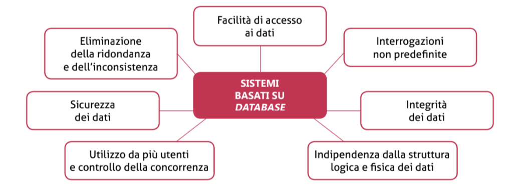

Che cos'è un database?
Con il termine BASE DI DATI (in inglese DATABASE) si intende una collezione di archivi ben organizzati e strutturati, memorizzati in un computer, in modo che possano costituire una base di lavoro comune per utilizzatori diversi.
I database presentano le seguenti caratteristiche:
- Indipendenza dalla struttura fisica dei dati
- Indipendenza dalla struttura logica dei dati;
- Utilizzo da parte di più utenti;
- Eliminazione della ridondanza e dell'incosistenza;
- Facilità di accesso;
- Sicurezza dei dati;
- Integrità dei dati;
